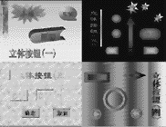

|
|
| 当前位置：电脑报电子版 > 1999 年 > 28 期 > OA专刊 > 立体按钮 制作集锦 |
| 《 立体按钮 制作集锦 》 |
| 用PowerPoint制作多媒体教学课件或演讲文稿，确实非常方便。但是在制作多媒体教学课件或演讲文稿时，为了使幻灯片能灵活地链接切换，需要用到大量的按钮，而在PowerPoint中仅提供了十二种常用的立体按钮。本文将通过PowerPoint强大的图形制作功能，制作出漂亮实用的立体按钮。 1.利用阴影、三维效果制作立体按钮 在PowerPoint的绘图工具栏中，可对图形进行阴影或三维效果制作。利用这两个功能，可以方便地制作出如图立体按钮（一）中所示的立体按钮。 先在“自选图形"中选择按钮图形，然后选择阴影或三维效果，并选择适当的阴影或三维颜色、深度、光线方向等设置，再加上相应的文字，即可制作出漂亮的立体按钮。 2.利用过渡填充色制作立体按钮 图中的立体按钮（二）所示的按钮，是利用图形颜色的过渡填充色效果制作而成的。用“自选图形"画出相应的按钮图形后，分别进行如下操作：选中该图形→点鼠标右键→选“设置自选图形格式"→选择“颜色和线条"标签→线条颜色设置成“无线条色"→填充颜色下拉后选择“填充效果"→进入“过渡"标签→在“底纹式样"中选“从中心" →在“颜色"中选“单色"→按“确定"即可。 使用该方法制作的按钮，具有立体仿真效果，且制作方便、简单。 3.仿Windows风格按钮的制作 Windows的按钮，对一般人来说太熟悉了。从Windows95的“开始"按钮，到“确定"、“取消"等按钮，让人感觉很亲切。在PowerPoint中制作这种按钮，非常方便。先画一个灰色的矩形，再用白色直线画矩形左上角的两条边，用黑色直线画矩形右下角的两条边，线与矩形组合后再加上相应的文字，即做成了可以乱真的仿Windows风格立体按钮了。将矩形左上角和右下角相对应边的黑白颜色互换，即可做成“凹"形的按钮。如果将矩形颜色改成背景色，则呈现出“浮雕"的效果，按钮效果如图立体按钮（三）所示。 4.新奇立体按钮的制作 看了立体按钮（四）中的立体按钮，你一定会认为制作非常复杂。其实，这种立体感很强的按钮制作非常简单。制作过程如下：先画一个矩形，将矩形的线条设置成“无线条色"；矩形内的颜色用“填充效果"中的“过渡"功能，设置单色，并在“底纹式样"中选“纵向"。再画一个较小的矩形，与前一矩形同样设置，唯一不同的是，纵向过渡色与大矩形的方向相反。再将小矩形移入大矩形中，立体效果就出现了。真是意想不到，一个有强烈立体感的图形就是用这样两个简单的矩形叠加而成。 变化一下，将矩形改成菱形、圆形、椭圆形等图形，就产生了各种立体按钮了。再进一步，在已制作好的圆形立体按钮中，又加一个小的带过渡色的圆，注意最小圆的过渡色方向，与中间的圆的过渡色正好相反，三个圆叠加在一起，立体效果就更强了。 (浙江 李永前) |
| 下载本期推荐软件 | 页 首 |
| 《电脑报》版权所有，电脑报网站编辑部设计制作发布 |